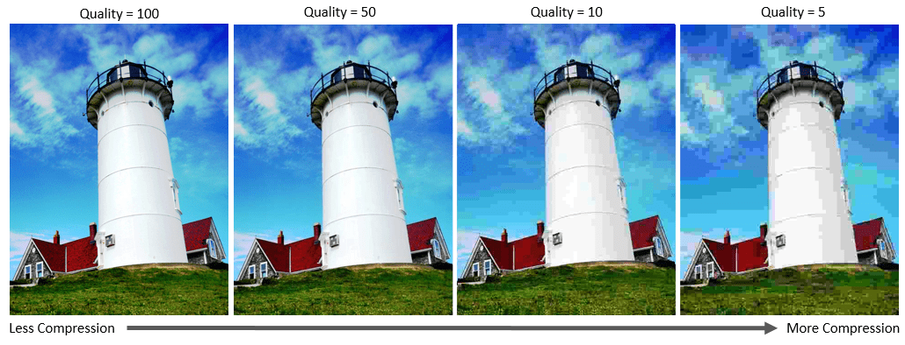

Compressie is het weergeven van gegevens dan hoe de oorspronkelijke
weergave eruitzag. Er zijn twee typen compressie, exact omkeerbaar
en niet-exact omkeerbaar.
exact omkeerbaare compressie
Bij dit type compressie wordt er een exact kopie gemaakt van het origineel.
Dit wordt voraal gebruikt voor tekstbestanden, omdat je daar geen tekst gewoon
kan verwijderen. Exact omkeerbaare compressie wordt gedaan door vaak voorkomende
letters of woorden een eigen code van bits met een bepaalde bitlengte te geven.
De meest vookomende woorden of letters krijgen dan de kortste code terwijl de
minst voorkomende woorden of letters een lange code krijgen.
Niet exact omkeerbaare compressie
Dit type compressie wordt voral gebruikt bij beeld of geluid. Hierbij wordt wel
informatie weggelaten zodat het plaatje of geluid kleiner wordt. de compressie
verwijderd de overbodige informatie. Een voorbeeld is als een bestand meer éénen
dan nullen heeft of andersom. De extra éénen of nullen worden dan met compressie
verwijderd zodat het bestand kleiner wordt. Hoe goed de compressie bij dit type
zal werken ligt aan hoe het bestand er van binnen uitziet. Als een bestand al een
keer door compressie heen is gegaan zal bij een tweede keer niks of weinig veranderen
als het bestand een patroon heeft zal het veel beter te comprimeren zijn.
Voorbeelden van niet exact omkeerbaare compressiealgoritmes zijn bijvoorbeeld JPEG waarbij
de kwaliteit verlaagd wordt, MP3 en AAC worden gebruikt voor geluidsbestanden en MPEG-2
wordt gebruikt voor videobestanden en voor dvd of DVB.
